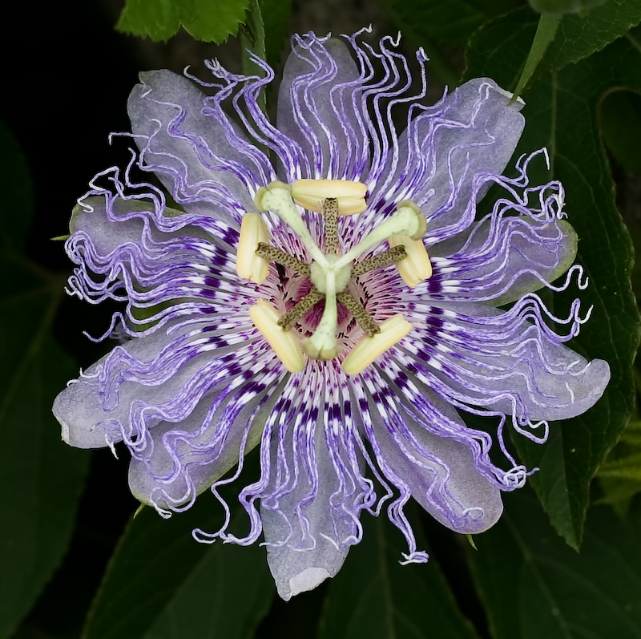
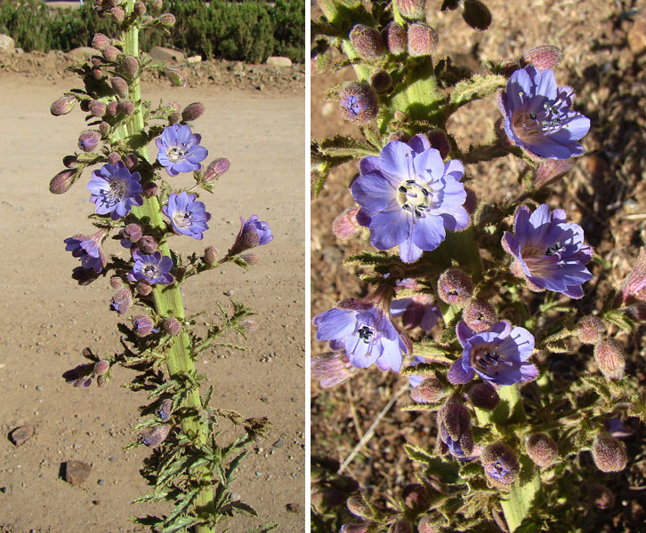
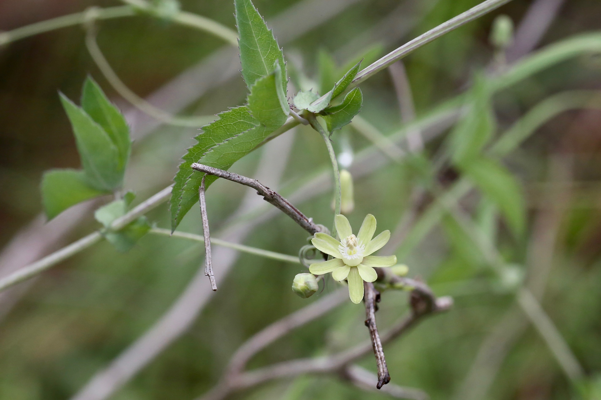

Passifloraceae
passionflower family
|  Passiflora incarnata (passionflower) from Wikimedia Commons by Oliv9928586149er P. Quillia - Own work, CC BY 3.0 |
 Malesherbia paniculata from Wikimedia Commons by Dick Culbert, CC BY 2.0 |
|  Basananthe triloba from Wikimedia Commons by Dr. Alexey Yakovlev, CC BY-SA 2.0 |
 Tricliceras glanduliferum from Wikimedia Commons by Bernard DUPONT, CC BY-SA 2.0 |
{kind=link}
{kind=link}
{kind=link}
botanical characteristics
"Passifloraceae", Encyclopedia Britannica
- growth form
- herbaceous or woody vines, lianas, shrubs, and trees
- stems/leaves
- leaves are often spirally arranged along the stem and are stipulate
- flowers
- radially symmetrical unisexual or bisexual flowers
- often 5 sepals and 5 petals
- reproductive structures
- often 5 stamens
- ovary positioned superior and is composed of 3-5 carpels
- nearly all species have seeds that bear a fleshy appendage called an aril
- fruit matures into a capsule or berry
distribution
"Passifloraceae", Wikipedia
- about 750 species classified in around 27 genera
- mostly found in tropical regions
ecological roles
"Passifloraceae", Wikipedia
- Passiflora vines and Dryas iulia (among other heliconian butterflies) have demonstrated evidence of coevolution, in which the plants attempted to stop their destruction from larval feeding by the butterflies, while the butterflies tried to gain better survival for their eggs
common pharmacological constituents
"Angiosperm families - Passifloraceae Juss.", DELTA
- CAM recorded directly in Adenia; often cyanogenic, or not cyanogenic; cynogenic constituents of the gynocardin group; alkaloids present (commonly), or absent; iridoids not detected; saponins/sapogenins present, or absent; proanthocyanidins absent; flavonols absent; ellagic acid absent (3 species of Passiflora); aluminium accumulation not found; sieve-tube plastids S-type
"Angiosperm families - Turneraceae DC.", DELTA
- cyanogenic (often), or not cyanogenic; cynogenic constituents of the gynocardin group (?); alkaloids present, or absent; proanthocyanidins absent; flavonols absent; ellagic acid absent
patterns in medicinal actions
- action on the nervous system, tending toward the psychoactive
- nervine effect can be sedative or stimulating
- the stimulation may a result of the space created by relaxing
traditional/cultural uses
"Passifloraceae", Wikipedia | "Malesherbia", Wikipedia | "Adenia", Wikipedia | "Passiflora", Wikipedia
- the passionfruit is the fruit of Passiflora edulis; the fruit of many species of Passiflora are edible
- Malesherbia ardens is used in traditional medicine to treat colds, coughs, bronchitis, and asthma
- several species of Adenia are used in traditional African medicine
- various parts of A. cissampeloides are used to treat many conditions, including gastrointestinal problems, inflammation, pain, fever, malaria, leprosy, scabies, cholera, anemia, bronchitis, sexually transmitted diseases, menorrhagia, and mental illness; it is also used both as an abortifacient and to prevent miscarriage
- A. dinklagei leaves are ingested to treat palpitations
- the leaves of A. tricostata are used to treat fever
- the leaves or leaf sap of A. bequaertii are taken to treat headache, mental illness, and possession
- A. lobata stems are applied to sites of Guinea worm infection during extraction of the worm, and it is also used as an enema and an aphrodisiac
- A. cissampeloides is used as a fish poison and arrow poison, the red-colored sap is used as a cosmetic, the stems can be made into rope, the crushed twigs or smoke from burning roots can be used to calm honeybees during honey harvest, and the leaves are eaten as a vegetable
- a native source of beta-carbolines (e.g., passionflower in North America) is mixed with Desmanthus illinoensis (Illinois bundleflower) root bark to produce a hallucinogenic drink called prairiehuasca, which is an analog of the shamanic brew ayahuasca
warnings
- no family-wide warnings
extra information
"Passifloraceae", Encyclopedia Britannica
- the passionflower blossom, especially the flower of the purple passionfruit (P. edulis), is often used to symbolize events in the last hours of the life of Jesus Christ, the Passion of Christ, which accounts for the name of the group
- the corona represents the crown of thorns, the styles represent the nails used in the Crucifixion, the stamens represent the five wounds, and the five sepals and five petals represent 10 of the Apostles (all but Judas, who betrayed Jesus, and St. Peter, who denied Jesus three times on the night of his trial)
prominent genera
- Adenia (adenias)
- Malesherbia (malesherbias)
- Passiflora (passionflowers)
- Turnera (incl. damiana)
plant highlights
see list of materia medica entries here
sources
"Adenia" on Wikipedia. Retrieved 28 August 2025.
"Angiosperm families - Passifloraceae Juss." on DELTA - DEscription Language for TAxonomy. Retrieved 28 August 2025.
"Angiosperm families - Turneraceae DC." on DELTA - DEscription Language for TAxonomy. Retrieved 28 August 2025.
Easely, Thomas and Steven Horne. The Modern Herbal Dispensatory (2016)
Elpel, Thomas J. Botany in a Day: The Patterns Method of Plant Identification (2021)
Goldberg Blackthorn, Samantha. Ace of Cups Herbal Medicine and Botanical Magic Herbal School (2024)
Mabey, Richard et al. The New Age Herbalist (1988)
"Malesherbia" on Wikipedia. Retrieved 28 August 2025.
"Passiflora" on Wikipedia. Retrieved 28 August 2025.
"Passifloraceae" on Britannica. Retrieved 28 August 2025.
"Passifloraceae" on Wikipedia. Retrieved 28 August 2025.